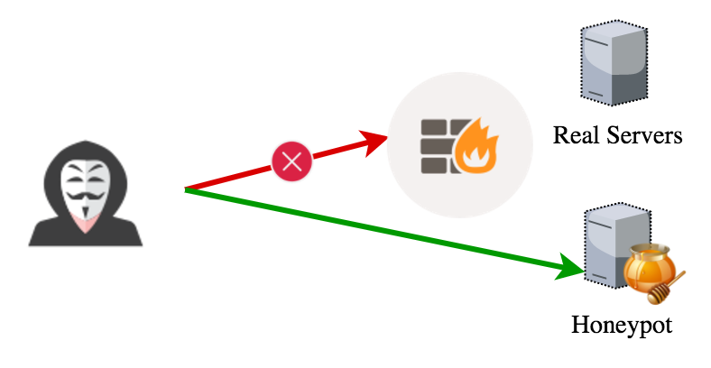
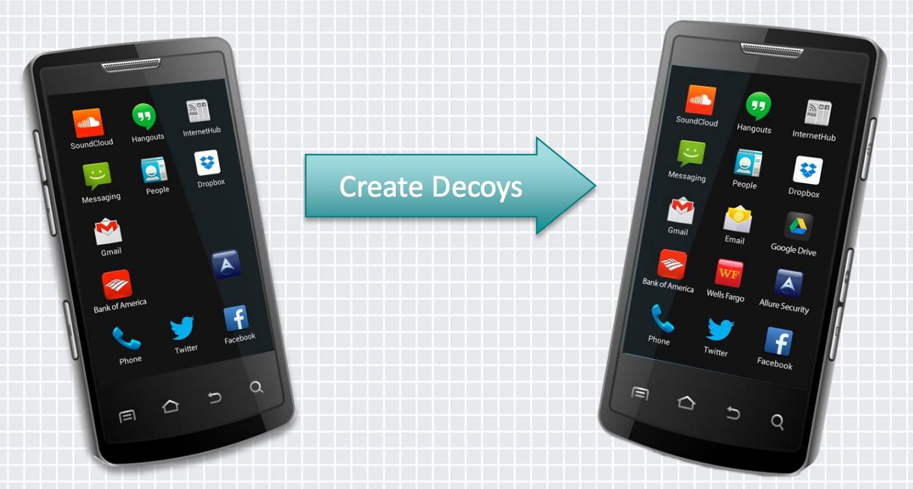
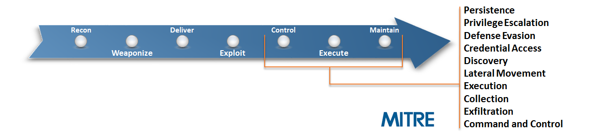
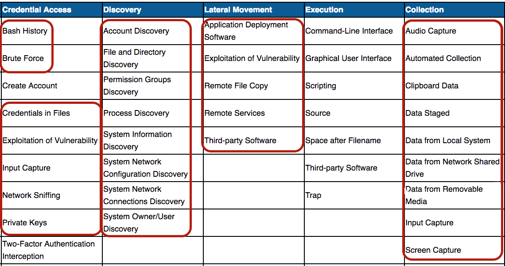
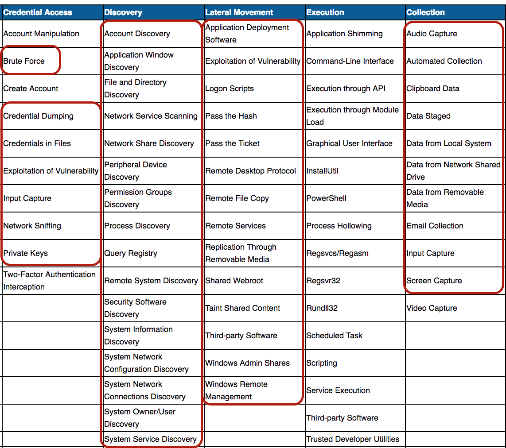
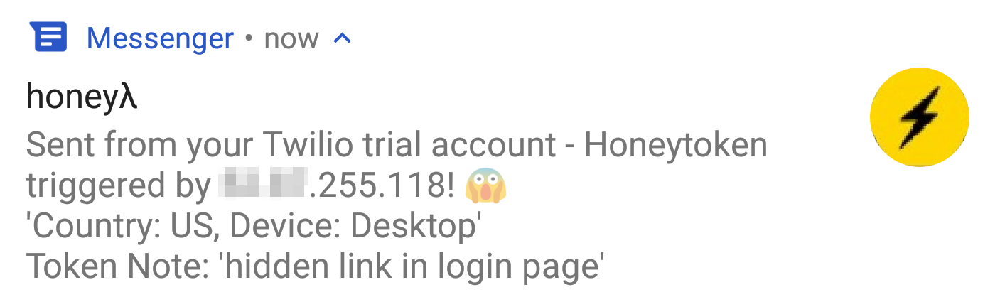

Detect When You Get Pwned Using
Honeytokens
By Adel Karimi / @0x4D31
About me
- Adel "0x4D31" Karimi
- Honeynet Project member & ex-chapter lead
- Trapbits honeypot community, Founder
Agenda
An Introduction to Honey{*}
Honeytoken Workshop
Honeypots
A resource whose value lies in being probed, attacked, or compromised!
- Lance Spitzner
No honey{*} has any authorized use
ANY interaction with honeypot indicates malicious or unauthorized activity!

Honeytokens
The Other Honeypot
A honeypot that is not a computer!
Honeytokens come in many different forms...
- Extremely flexible
- Can be adapted to any environment
A Honeytoken can be a ...
- Beacon document (e.g. MS Word/Excel, PDF)
- Fake credentials/accounts
- Database record
- URL or HTTP endpoint
- Fake file
- DNS record
- QR code!
- Etc.
What about decoy mobile applications?
 - "You are what you click: Using Decoys to Identify Mobile Device Attackers", RSA Conference 2015Post breach detection
Depending on where/how you implement honeytokens, you may detect ...
Human attackers / intruders
Malicious insiders
Content scrapers or Bad bots
And even your snooping partner! 😜

A Story
...
Post-compromise activities
A part of Linux ATT&CK matrix
A part of Windows ATT&CK matrix
Workshop
Honeytoken {Creation | Placement | Monitoring}
A Serverless Trap!

Create & monitor fake HTTP endpoints (ie. URL honeytokens) automatically
Features
Remote config: Amazon S3
Customize the HTTP response for each token
Threat Intelligence report (Source IP lookup)
Based on Serverless framework
--> pay-what-you-useSlack, Email and SMS alerts
Setup & Deploy
https://gist.github.com/0x4D31/093653b52f3e9e05e48a61701ca6de99{Test}
Honeybits
TBA
Canarytokens
TBA
Decoy Docs
TBA

This work is licensed under a Creative Commons Attribution-ShareAlike 4.0 International License.